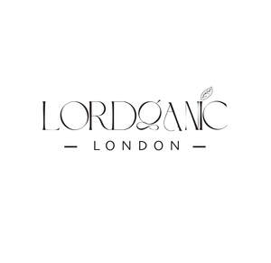

Trade Mark Journal No.2025/028 11 July 2025
UK00004226140 28 June 2025 (9,11,29,30)

- Class 9
- Smart home software; Smart home hubs; Smart watches; Wearable smart phones; Home automation devices; Smart speakers; Smart glasses; Home automation software; Application software for smart phones; Home automation systems; Home remote controls; Downloadable smart phone applications (software); Software for Smart Contracts; Software for the planning, integration and optimisation of smart city applications; Clocks (Time -) [time recording devices].
- Class 11
- Tea kettles, electric; Electric kettles; Cordless electric kettles; Hot pots, electric; Tea warmers (Electric -); Electric beverage warmers; Electric coffee roasters; Electric tea machines; Electric tea makers; Domestic coffee percolators [electric]; Electric coffee brewers; Electric coffeepots; Electric coffee filters; Electric coffee makers.
- Class 29
- Dried fruits; Dried vegetables; Dried mangoes; Dried fruits in powder form; Dried fruit mixes; Candied fruits; Dried figs; Dried nuts; Nuts being dried; Processed fruits; Candied nuts; Flavored nuts; Roasted nuts; Salted cashews; Roasted peanuts; Cashew nuts (Prepared -); Coated peanuts; Peanuts, prepared; Crystallised ginger; Pickled vegetables; Canned vegetables; Dates; Dried dates; Processed dates; Caviar; Salmon caviar; Black caviar; Prepared pistachios; Prepared almonds; Prepared walnuts.
- Class 30
- Ginger [powdered spice]; Cinnamon powder [spice]; Chocolate powder; Chili powder; Ginger tea; Peppermint tea; Tea; Drinks in powder form containing cocoa; Condiments in powder form; Puddings in powder form; Dried sauce in powder form; Spices in the form of powders; Turmeric powders for use as a condiment; Iced tea mix powders; Pepper powder [spice]; Cocoa [roasted, powdered, granulated, or in drinks]; Tea-based beverages with fruit flavoring; Tea mix powders; Flavourings of tea for food or beverages; Tea beverages with milk; Coffee [roasted, powdered, granulated, or in drinks]; Instant cocoa powder; Cocoa powder; Ginger [spice]; Mixed spice powder; Cocoa beverages; Powdered garlic; Tea beverages; Ginger bread; Honey; Honey [for food]; Coffee beans; Roasted coffee beans; Chocolate-coated nuts; Chocolate-coated berries; Chocolate coated fruits; Chocolates; Filled chocolates; Liqueur chocolates; Milk chocolates; Chocolate candies; Chocolate sweets; Beverages containing chocolate; Drinks containing chocolate; Chocolate; Chocolate truffles; Sugar almonds; Almonds covered in chocolate; Chocolate-covered nuts; Chocolate coated nuts; Turkish delight; Turkish delight coated in chocolate; Baklava; Danish pastries; Wafers; Chocolate wafers; Wafer biscuits; Rolled wafers [biscuits]; Chocolate caramel wafers; Chocolate covered wafer biscuits; Puffed corn snacks; Extruded corn snacks; Snack foods made from corn; Cheese flavored puffed corn snacks; Cereal snacks; Crackers; Prawn crackers; Rice crackers; Salt crackers; Cream crackers; Saffron; Saffron for use as a seasoning; Crystallized rock sugar; Candy [sugar]; Sugar candy [for food]; Candy with cocoa; Chocolate-coated sugar confectionery.
LORDGANIC LONDON LTD